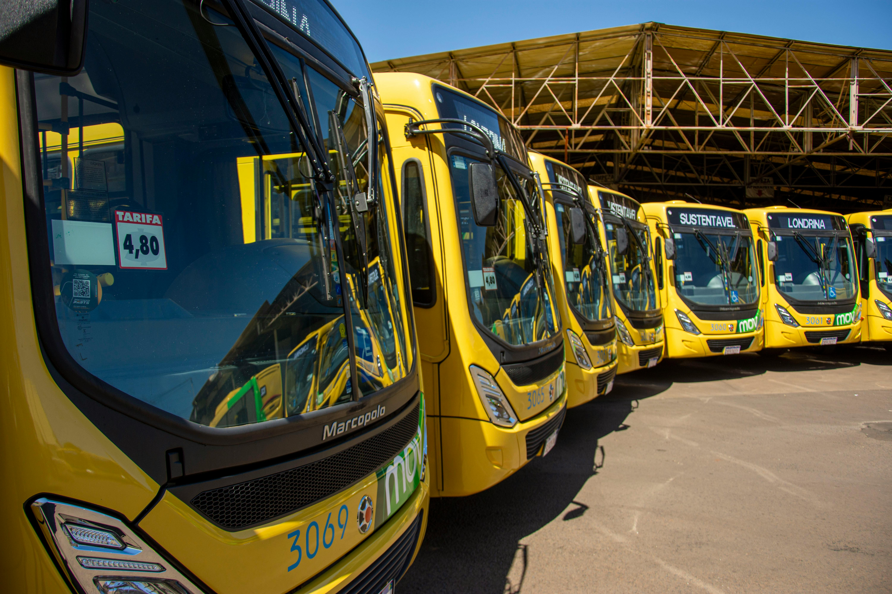
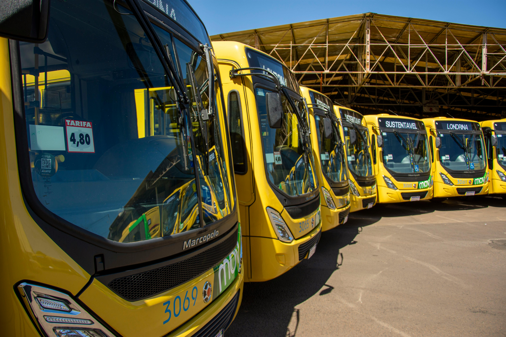

NYC Metropolis Taxi Analytics: A Deep Dive
New York City, a 24-hour metropolis, is home to one of the world’s most complex transportation networks. Taxi analytics reveal how millions of micro-decisions—from drivers, passengers, and even weather—shape traffic efficiency, fuel consumption, and passenger accessibility.
1. Understanding Mobility Dynamics
The NYC Taxi & Limousine Commission (TLC) data captures detailed trip-level information including pickup and drop-off times, trip distance, fares, payment types, and tip amounts. Researchers analyze patterns to identify high-demand areas, congestion hotspots, and passenger trends.
For instance, morning rush hours reveal concentrated pickups in Manhattan’s residential zones, while late-night demand surges around entertainment districts. Seasonal and weather-based analysis uncovers taxi shortages during heavy rainfall, offering insights for predictive resource planning.


2. Real Data, Real Impact
Post-pandemic, the taxi industry’s focus shifted from volume to efficiency. Machine learning models now help predict demand, reduce idle times, and balance supply across boroughs. Integration with ride-hailing apps ensures smarter dispatch and minimal passenger wait times.
Sustainability metrics—such as CO₂ emissions per mile and hybrid usage rates—are tracked to support NYC’s environmental goals. These insights enable city planners to design greener, more inclusive transport systems.
3. Building for Innovation
Data analytics drives future-ready innovation. Predictive analytics forecasts high-demand events like sports or concerts, optimizing fleet distribution in real-time. Partnerships with AI startups enhance fare prediction accuracy and improve traffic decongestion models.
These innovations are gradually leading toward a smart mobility ecosystem—connecting taxis, subways, e-bikes, and autonomous vehicles through shared digital infrastructure.
City in Motion — Visualizing the Urban Pulse
 

.jpg)
📊 NYC Metropolis Taxi Analytics Report
Dive into the official research paper detailing New York’s urban taxi evolution, real-time analytics, and future trends in sustainable mobility.
About This Platform
The NYC Taxi Data Visualization platform empowers researchers, policymakers, and developers to understand mobility challenges through open data analytics. It bridges the gap between raw datasets and real-world decision-making.
Future Expectations & Emerging Directions
The next decade will see the fusion of autonomous taxis, machine learning-based route optimization, and citizen-centric mobility systems—paving the way for smarter, fairer cities.